Message your friends when there's no signal.
Mesh+ is a friendly Android app for Meshtastic radios. Connect a pocket-sized LoRa radio to your phone, and your messages hop from radio to radio across hills and valleys with no cell towers, Wi-Fi or internet anywhere along the way.
Mesh+ is free and open source, weighs about 3 MB and needs Android 12 or newer. No radio yet? The built-in demo lets you look around first.
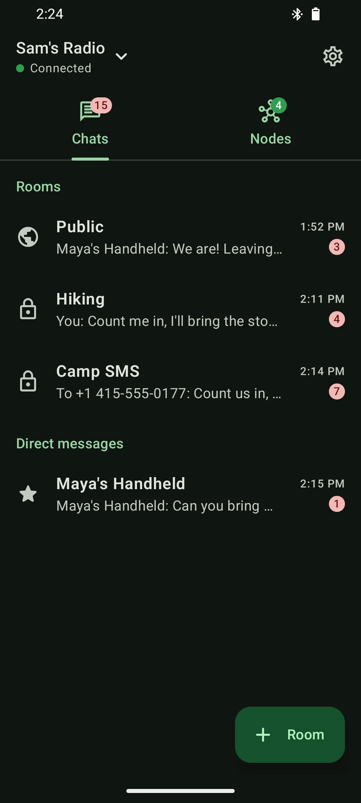
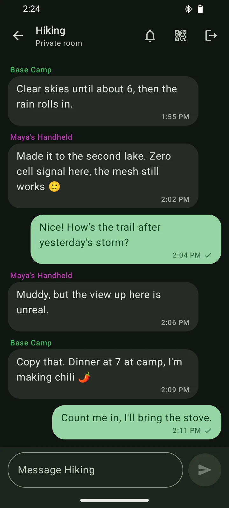
You can go from the box to your first message in about a minute.
Meshtastic radios pass messages along to each other over long-range LoRa radio, so every radio in range becomes part of the network. Mesh+ is how your phone talks to yours.
Get a Meshtastic radio.
Mesh+ works with radios running Meshtastic firmware 2.x, such as the Heltec Mesh Node T114 or the RAK4631. The friends you want to reach need one too, and every radio in between helps carry messages further.
Connect it to your phone.
Pair over Bluetooth with the PIN shown on the radio's screen, or plug it in with a USB-C cable and let your phone power it. Mesh+ remembers your radios, so reconnecting takes a single tap.
Pick a region and a name.
A new radio stays quiet until it knows which band to use, so Mesh+ asks once and suggests the right region from your phone's country. Choose how you'll show up on the mesh and you're ready to chat.
Public chat, private rooms and direct messages live in one list.
The public channel is the open room that everyone nearby shares. Private rooms are encrypted so that only the people you invite can read them, and direct messages are end-to-end encrypted by the radio's firmware.
- A check under your message tells you another radio relayed it, or that your friend's radio received it.
- Unread badges show what's new, and you can mute any room or person you don't need to hear from.
- Mesh+ keeps running in the background while you're connected and notifies you when a message arrives.
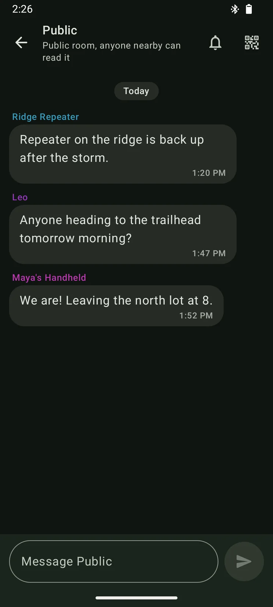
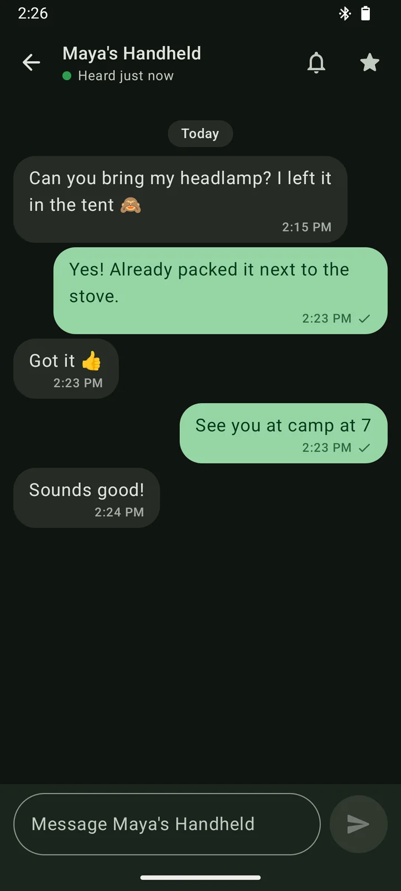
When one phone has signal, the whole group can text.
Out in the backcountry it's common for just one person, maybe at base camp or up on the ridge, to have a bar of cell service. Turn that phone into a relay and everyone on the mesh can send and receive regular text messages through it.
- A cell tower reaches one phone.
- Base Camp's phone has signal and runs the relay.
- Radios pass the texts along the mesh.
- Your phone has no signal, just a radio.
Texts and calls arrive in a private room.
Every SMS the relay phone receives, along with its incoming and missed calls, is posted to a private room you pick, and Mesh+ shows them as a familiar texting thread.
Anyone in the room can text back.
Swipe a text to answer it, or tap the SMS button to write to any number or contact. The relay phone sends it from its own number, and a check appears once it's gone out.
Friends on other Meshtastic apps can join in.
Relay messages are plain text, so people using another Meshtastic app can read them and send a text by typing /sms +15551234567 your message.
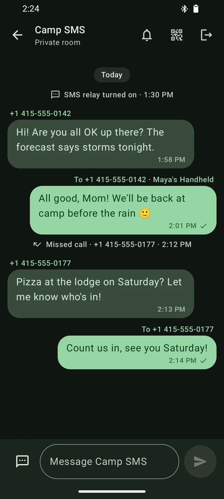
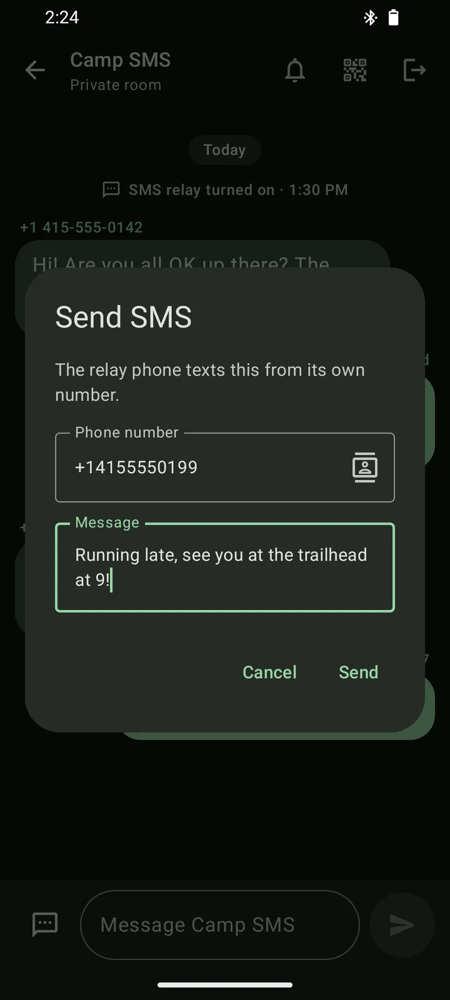
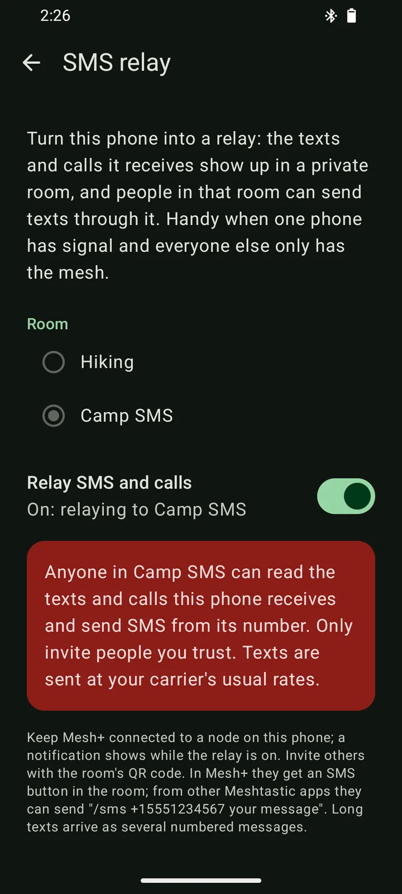
Turning it on takes a few seconds.
On the phone that has signal, open Settings, then SMS relay, pick a private room (or let Mesh+ create one called Relay) and switch it on. Android asks for SMS and phone access once, and a notification stays up for as long as the relay is running.
The relay is off until you turn it on, and you can switch it off at any time from the same screen.
Invite friends to a private room with a QR code or a link.
Create a room in a couple of taps and share it as a QR code to scan or as a link to send ahead of the trip. Mesh+ uses the standard Meshtastic invite format, so links from the official Meshtastic apps open in Mesh+ and yours open in theirs.
- Each private room has its own encryption key, so people without the invite can't read it even though their radios pass it along.
- Joining is as quick as scanning the code or pasting the link, and leaving takes one tap.
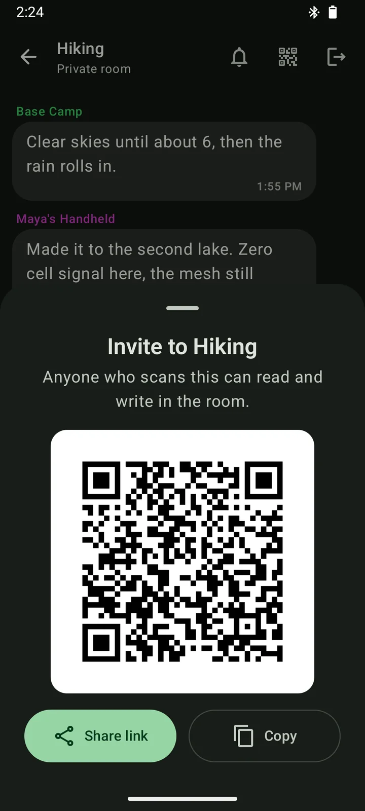
See every radio your node can hear.
The Nodes tab lists everyone your radio has heard, with your favorites on top and an online badge for anyone heard in the last two hours. Tap a node to see when it was last heard, how many hops away it is, how strong its signal is and how much battery it has left, then message it or add it to your favorites, which are saved on your radio.
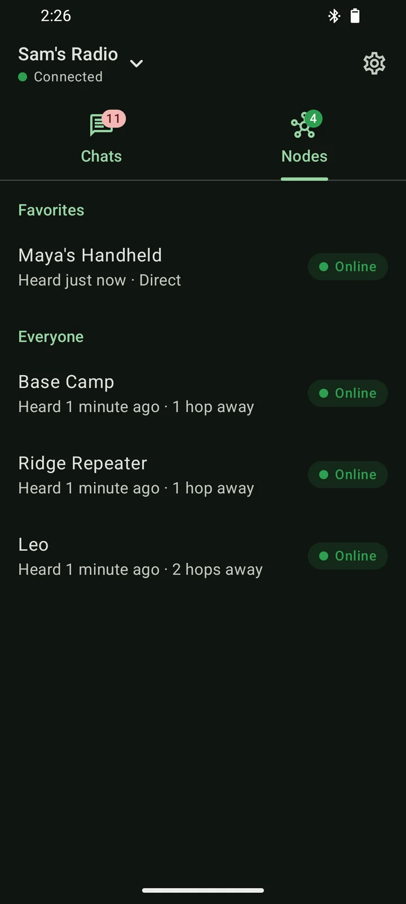
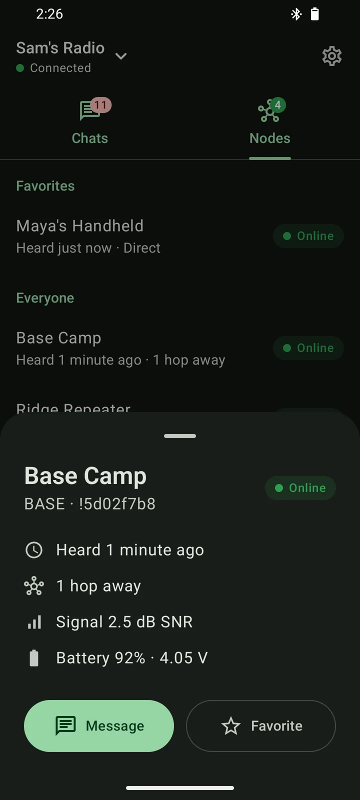
Every setting explains what it does in plain words.
Role, relaying, radio preset, hop limit, transmit power, location sharing, power saving, the screen and Bluetooth pairing are each a tap away, and every one of them comes with a short note on what it does and when you'd change it. Mesh+ saves your changes together, so the radio only restarts once.
- The top of the page shows which board your radio is, the firmware it runs and its battery.
- When something goes wrong you can clear the node list, reset the settings while keeping your identity, or do a full factory reset.
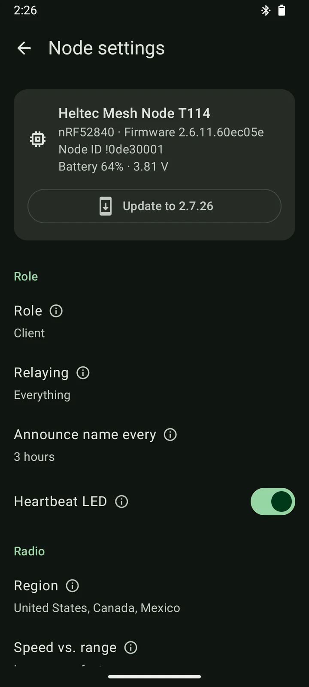
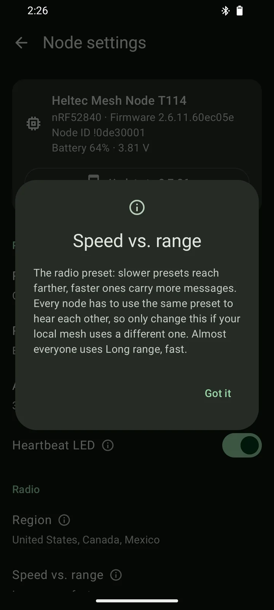
Update your radio's firmware without a computer.
When a new stable Meshtastic release comes out, Mesh+ offers it right in your radio's settings. nRF52 boards such as the Heltec T114 and RAK4631 update over a USB cable in about a minute, or over Bluetooth in about ten minutes when you'd rather not plug in.
- You can pick any published version, including pre-releases, or go back to an older one.
- Your settings, rooms and messages stay put, and a radio stuck in update mode can be rescued from the connect screen.
- ESP32 boards update from a computer at flasher.meshtastic.org.
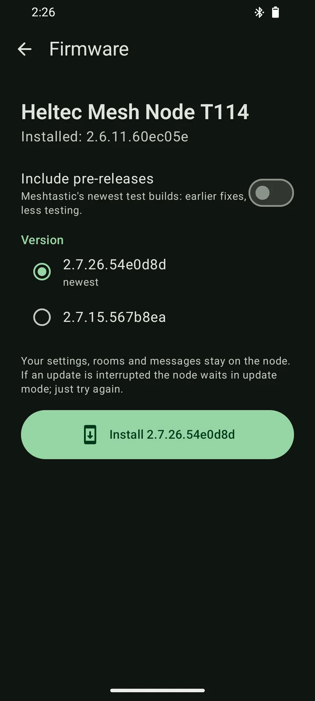
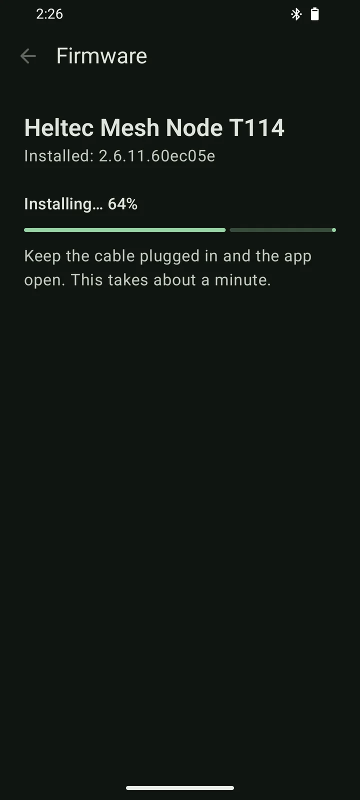
The little things are taken care of too.
All your radios are one tap away.
Switch between radios from the top bar and see which board each one is, the firmware it runs and its battery.
You can try it without a radio.
A built-in demo simulates a radio with rooms, direct messages, replies and settings, so you can look around before you buy hardware.
Noisy rooms can be muted.
Silence any room or direct message, and a crossed-out bell in the chat list reminds you which ones are quiet.
Your messages stay yours.
There are no accounts, ads or analytics, and your message history is stored only on your phone.
The code is open source.
Mesh+ is built in the open on GitHub, where anyone can read the code, build it themselves and send improvements.
A cable powers your radio.
Over USB-C your phone also powers the radio, so it keeps working even when the radio has no battery.
Mesh+ needs very little to get going.
Here are answers to the questions people ask most.
Do I need cell service or internet?
No. Messages travel between Meshtastic radios over LoRa, so chatting works anywhere your radios can reach each other. Mesh+ only goes online to check for firmware updates and download them.
How far can a message travel?
Two handheld radios with a clear line of sight can often reach each other across several kilometres, and every radio in between can pass a message further along. Hills, buildings and trees shorten the range, which is why people like to put a repeater somewhere high.
Can I chat with people who use the official Meshtastic app?
Yes. Mesh+ speaks the same protocol, so everyone on a channel sees each other's messages whichever app they use, and room invite links work in both directions.
Who can read the texts that go through the SMS relay?
Everyone in the relay room can read the texts and calls the relay phone receives and can send texts from its number. The room is encrypted, so people outside it can't, but choose its members carefully. Nothing is ever sent to us or to any server.
Is Mesh+ on Google Play?
Not yet, so for now you install it from the APK on this page. Open the file on your phone and, when Android asks, allow your browser to install apps. Updates install the same way, right over the previous version.
Is there an iPhone version?
Mesh+ is Android-only for now. Friends with an iPhone can join your rooms with the official Meshtastic app.
Does Mesh+ cost anything?
No. Mesh+ is free and open source, and it has no accounts, ads, analytics or in-app purchases.
Take your group chat off the grid.
Download Mesh+, connect your radio and send your first message across the mesh in about a minute.
Open the APK on your phone and, when Android asks, allow your browser to install apps.